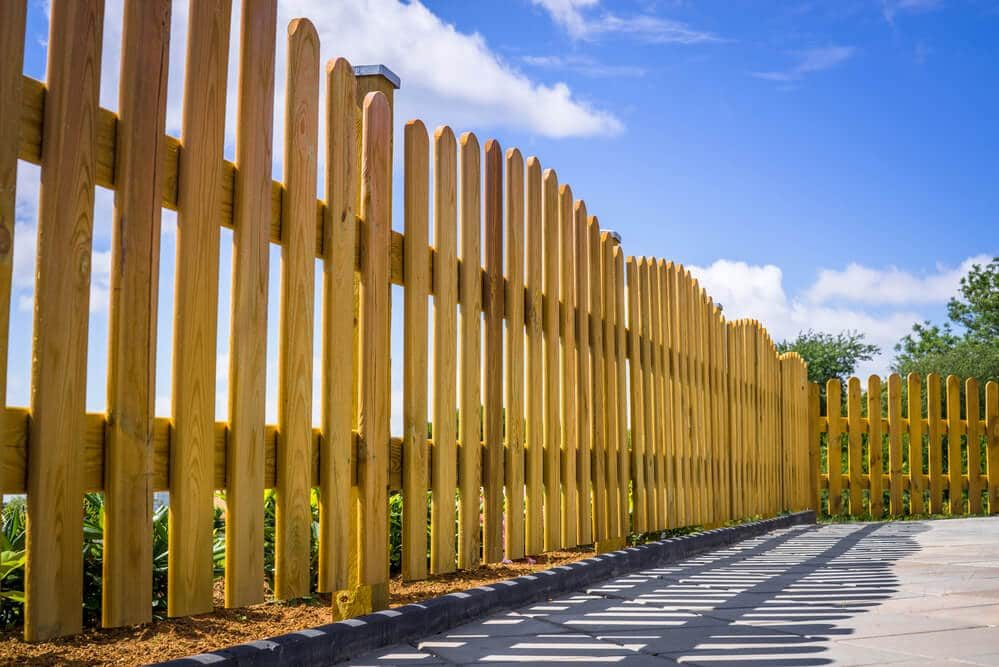

In This Guide
- Summer sun and humidity wear on wood fastest, so sealing or staining protects it from UV damage, moisture, and rot.
- A quick water sprinkle test shows whether the wood is ready: if drops soak in, it is time to seal or stain.
- Timing matters: aim for mild, dry, shaded conditions, with no rain for 48 hours and surface temperatures between 50 and 90 degrees.
- Vinyl, metal, and chain link fences need their own summer checks too.
Summer is a favorite season for time on the porch and the lawn. It also brings strong sun, heavy humidity, and afternoon storms, and your fence takes the full force of all three. A little planning before the heat peaks saves you real work later.
Here is how Big Easy Fence approaches summer fence care: what the season does to different materials, how to seal or stain a wood fence properly, and when to do the job. If you are still deciding what to build, our page on fence types shows how each holds up in the heat.
What Summer Does to a Fence
Sun breaks down wood, fades vinyl, and heats metal. Humidity keeps moisture in the air and in the wood, and storms bring wind and heavy rain. Unprotected wood begins to weather in a matter of weeks when it faces sun and rain, and the damage compounds from there. Treating a fence early slows that decline.
Sealing and Staining a Wood Fence
Sealing and staining are the two best ways to make a new or existing wood fence tougher and more weather-resistant. Each does a different job.
Sealing
A wood sealer protects the fence by coating the wood in a clear, water-repellent layer, which helps prevent rot. Sealers go on with a standard paintbrush or a foam brush. Because a fence lives outdoors, use a high-quality product made for exterior wood.
Staining

Stain improves the color of the wood, highlights its grain, and gives it a richer tone. It comes in different levels of opacity. Lighter, more transparent stains show off more grain, while heavier stains cover it. Our guide to choosing the best wood stain for fences can help you pick.
Seal, Stain, or Both
Both protect the fence and save money over the long run. If your top priority is keeping the fence sound for years, a good sealer does the job. If looks matter to you, stain is the way to go, and many people use both for a sturdy fence that also boosts curb appeal.
How to Seal or Stain a Fence the Right Way
The job takes elbow grease if you do it yourself, and hiring a crew can save time and effort. Either way, this is the order of work.
- Test the wood. Sprinkle some water on the fence. If the drops bead up, wait a few days and try again. If the wood soaks the water in, it is ready to seal or stain.
- Clean the fence. Use a wood cleaner to remove old sealer, stain, mold, and mildew, so the new coat can soak in and stick.
- Brighten and let it dry. A wood brightener neutralizes the cleaner and opens the wood to the new product. Then make sure the fence is completely dry, especially between slats and near the ground. Wear gloves and eye protection and follow every product label.
- Apply the product. Spread it with a roller and follow right away with a brush to work it into the grain and between the slats. Two to three heavy coats give the best durability, since stain pigments also block the UV rays that turn wood gray.
Picking the Right Day to Apply It
Timing changes how well a stain or sealer works. Wood already loaded with humidity will not absorb the product properly, and in high heat the product can dry before it soaks in to lock out moisture. In Louisiana summers, that makes a mild, dry morning the safest bet.
- Moderate temperatures. Both the air and the wood surface should sit between 50 and 90 degrees F.
- No direct sun. Work in the shade or in the early hours.
- A dry forecast. Wait for at least 48 hours without rain.
Manufacturer directions come first. As a general rule, stain and sealer both need refreshing every few years, so keep a note of when you last did the job.
Summer Care for Other Fence Types
Wood is not the only material that needs a look before the heat sets in.
Check the Finish
Look for gray, dry boards and loose posts, and reseal anything that soaks up water.
Wash and Inspect
Rinse off dirt and mildew, and look for cracks or discoloration from long sun exposure.
Watch for Rust
Touch up chipped coatings promptly so moisture cannot get to bare metal.
Check Coatings and Ties
Look for rust spots and loose fittings, especially after storms.
Keeping Up With Your Fence All Year
Summer care pays off most when it fits into a routine. Trim plants back from the fence, clear debris from the base, and look things over after every big storm. For more on keeping moisture out of wood, read our tips on protecting a wooden fence against rotting.
If you find damage that goes beyond a weekend fix, professional fence repair can pick up where DIY leaves off.
Need a Hand Getting Ready for Summer?
Tell us what your fence is made of and what you are seeing, and we will help you plan the right summer care or repair.